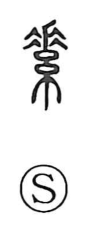

素

Kun: moto, motoyori | On: so, su
raw material ・ base ・ white ・ white silk ・ original nature
Explanation
素 pictures a bundle of thread being dyed. The strands are tied together at the upper end and lowered into a pot of dye. Where the bundle is bound tightly, the dye cannot reach the thread, leaving a white section in its original colour. The upper strokes mark this tied portion above 糸, the thread.
That undyed part is 素: white thread or plain white silk. Because it remains as it was before treatment, it also gives the senses ‘original,’ ‘basic,’ and ‘unadorned.’ Applied to a person, the same idea concerns natural disposition or an unaffected character. Applied to time, it means from the beginning, beforehand, or ordinarily—the condition already there before anything further is added.